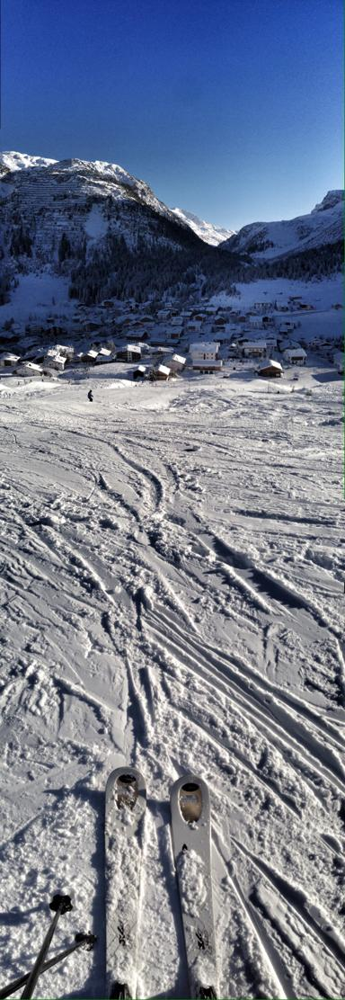

This project is inspired by the work in
this paper
by Shai Avidan and Ariel Shamir.
All of the images used are my own, unless otherwise noted.
The idea of seam carving allows for both reduction and expansion of images in content-aware manner, unlike the traditional techniques of cropping and streching.
A seam is an 8-connected path of pixels on an image from top to bottom or left to right, depending on the dimension that is being altered.
The seam that will be removed or inserted is the one of least importance, as is defined by an energy function. This ensures that we remove or add pixels that do not alter the overall image structure in noticeable ways.
Introduction
Seam Removal: Algorithm
My algorithm for removing seams consisted of iteratively finding the lowest energy seam and removing it until I reached the desired dimension.
The energy function that I used to generate the majority of my images was a measure of gradient saliency that consisted of the sum of the absolute value of the partial derivative of the grayscaled image in the horizontal and vertical directions.
This function allows me to assign each pixel with a level of importance, which shall be used to find the seam with the lowest cumulative energy.
The optimal seam is found using dynammic programming in a process that is twofold:
First, the function iterates through all pixels starting from the second row/column and computes the cumulative energy for all pixels by adding the current pixel's energy to the minimum energy of the pixels above/left of it.
Second, it backtracks from the pixel with the least cumulative energy in the last row/column recording the indeces of the pixels that form a part of the optimal seam (least cumulative energy). If there is a tie, my algorithm breaks it by returning the index with the lowest value.
The seam removal happens by adding the image information before and after the index specified in seam to a carved version of the image.
The energy function that I used to generate the majority of my images was a measure of gradient saliency that consisted of the sum of the absolute value of the partial derivative of the grayscaled image in the horizontal and vertical directions.
This function allows me to assign each pixel with a level of importance, which shall be used to find the seam with the lowest cumulative energy.
The optimal seam is found using dynammic programming in a process that is twofold:
First, the function iterates through all pixels starting from the second row/column and computes the cumulative energy for all pixels by adding the current pixel's energy to the minimum energy of the pixels above/left of it.
Second, it backtracks from the pixel with the least cumulative energy in the last row/column recording the indeces of the pixels that form a part of the optimal seam (least cumulative energy). If there is a tie, my algorithm breaks it by returning the index with the lowest value.
The seam removal happens by adding the image information before and after the index specified in seam to a carved version of the image.
Seam Removal: Images
Here are some examples of horizontally carved images.
Starfish: original
768x576 pixels
Starfish: carved
537x576 pixels
Galactic Pyrotechnics on Display: original
Source
648x507 pixels
648x507 pixels
Galactic Pyrotechnics on Display: carved
388x507 pixels
Safari: original
604x404 pixels
Safari: carved
362x404 pixels
Reality TV: original
878x573 pixels
Reality TV: carved
614x573 pixels
(Has some artifacts around the bottom left and right, but is still pretty successful in my opinion.)
(Has some artifacts around the bottom left and right, but is still pretty successful in my opinion.)
Here are some examples of vertically carved images.
Dancing House: original
570x858 pixels
Dancing House: carved
570x600 pixels
Elephant: original
604x404 pixels
Elephant: carved
604x282 pixels

Slopes: original
384x1112 pixels
Slopes: carved
384x556 pixels
Dresden: original
824x548 pixels
Dresden: carved
824x383 pixels
Cacti: original
768x511 pixels

Cacti: carved
768x408 pixels
Flower Bed: original
547x698 pixels
Flower Bed: carved
547x488 pixels
Graffiti: original
620x786 pixels
Graffiti: carved
620x537 pixels
Bridge: original
404x604 pixels
Bridge: carved
404x362 pixels
East Asian Library: original
768x511 pixels
East Asian Library: carved
357x511 pixels
Failiure Examples
Although my seam removal algorithm worked on most of the images I ran it on, it was not perfect.
Here are some of the more undesirable results.
Here are some of the more undesirable results.

Flowers: original
960x638 pixels
Flowers: carved
576x638 pixels
Instead of removing more pixels from the left side or some of the space between the dead flower on the far right and the two central flowers, it chose to remove seams from main subject of the image.
Instead of removing more pixels from the left side or some of the space between the dead flower on the far right and the two central flowers, it chose to remove seams from main subject of the image.
Door Details: original
721x480 pixels
Door Details: carved
504x480 pixels
The algorithm does a pretty good job of bringing the metallic plaques closer to the ridges, but the highly structured nature of the image makes it so that the fragmented lines become quite obvious.
The algorithm does a pretty good job of bringing the metallic plaques closer to the ridges, but the highly structured nature of the image makes it so that the fragmented lines become quite obvious.
Marucha: original
522x778 pixels
Marucha: carved
522x466 pixels
It does not do a horrible job, but again it does not know what the figure is. Instead of removing seams from the background it removes them from my friend's body.
It does not do a horrible job, but again it does not know what the figure is. Instead of removing seams from the background it removes them from my friend's body.
Conclusion
The most important thing I learned from this project was the idea of an energy function. I think the notion of scoring pixels with a level of importance is extremelly clever and is likely to be useful for many other applications as well.